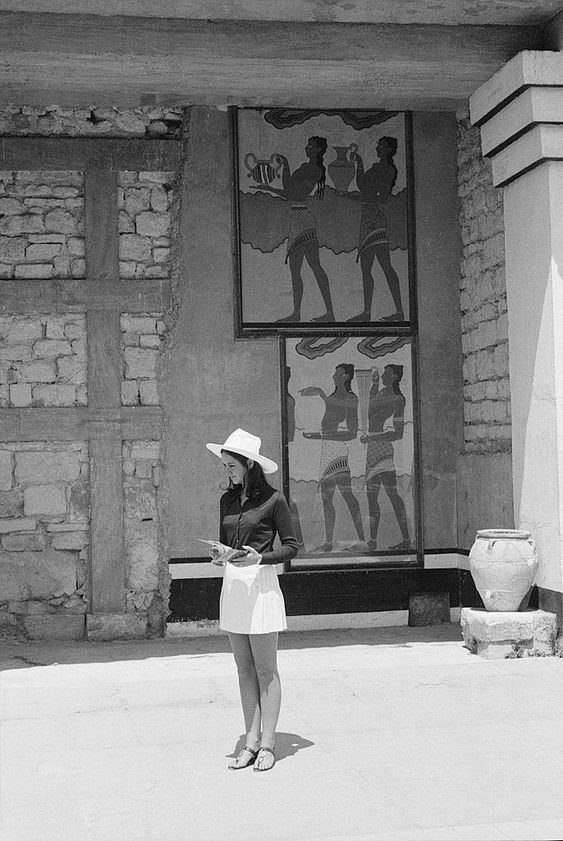
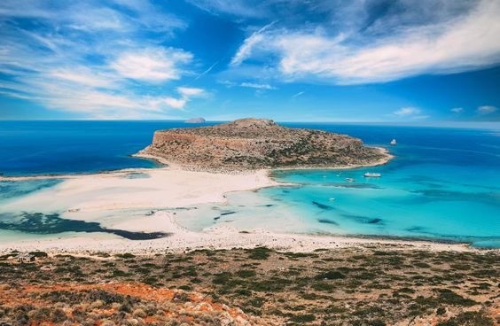

Crete

"Greece". Out of a hundred Greek islands to choose from, why Crete? Honestly, I don't know. I went on Google Maps, and felt satisifed that it seemed like a decently sized island with human life. Also, the geographical largeness of the island probably lended to a little more biodiversity and nature.
If you have better island recs, please let me know. I'm desperate.
How do you even get here
If your focus is Crete, flying directly into Heraklion or Chania is prob the most efficient choice. You'd want to rent a car when you get here as public transpo is not really good here.
If you have time or care to explore the mainland, flying into Athens and driving to Crete could be fun. You'd take a ferry from Piraeus to either Chania or Heraklion. Regardless, here are the airports in Crete:
- Heraklion International Airport (HER): Located near the capital city of Heraklion. This city is on the northern coast, kinda in the center of the island.
- Chania International Airport (CHQ): Western Crete.
Fun facts
- I read the Iliad a long time ago.
- Zeus was born in a cave on Mount Dikte, in Crete.
- This one of the oldest wine-producing regions in Europe. Some native grapes are Dafni, Plyto, Thrapsathiri, and Argyris. That last one I just made up.
- Crete was once home to the ancient Minoans, whose significance can be attributed to their relative advances in maritime acitivity, architecture, and plumbing.
- Not a fun fact, but I like to be aware of the potential downsides of a place before going. Seems like the beaches are more rockier/pebblier than what you may have romanticized in your head. Also, it can get quite windy on the North shore.

Nature things
Obviously, drop by any decent beach you come across. But for specifics...
- Balos Lagoon: On the northwest coast. Accessible by boat or by hiking from the nearby parking area. Known for its turquoise waters and its dramatic coastal cliffs. Just effin superb
- Preveli Palm Forest: Located in southern Crete, near Preveli village. It is situated at the mouth of the Kourtaliotiko Gorge, where the Kourtaliotis River flows into the Libyan Sea. Looks like a scene out of a classical myth.
- Samaria Gorge Hike: Located in the White Mountains (Lefka Ori) of western Crete. Doing the whole hike would take around 8 hours. It gives Minecraft.
Eats
Some restaurants/cafes I came across while researching
- Chrisostomos Taverna
- Koukouvaya Cafe
- To Meraki tou Manoli
When to visit
According to a friend of a friend, the best time to come is right after August ends (to avoid those damn kids) but not too late in September. Anything earlier would be hellishly hot and equally as crowded.